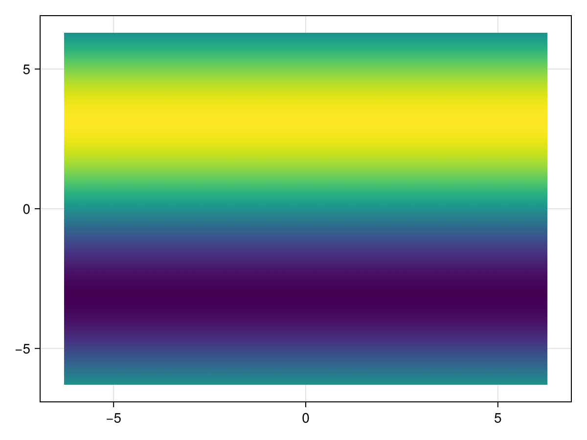
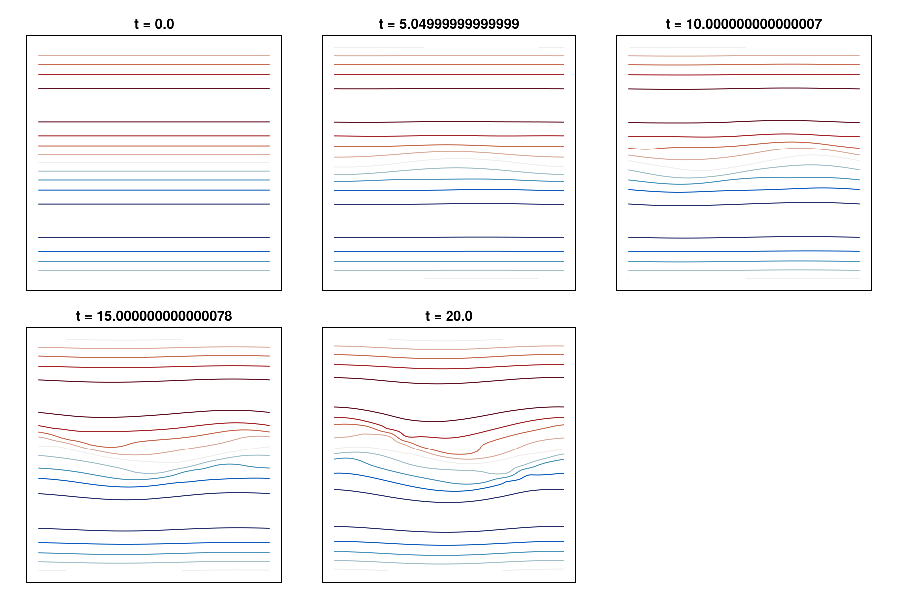

Tutorial: Shallow water on a plane
This tutorial is available as a Jupyter notebook.
This tutorial solves the shallow-water equations on a doubly periodic plane with continuous-Galerkin spectral elements: a Bickley jet that rolls up through barotropic instability. It shows a full spectral-element tendency with weak-form operators, direct stiffness summation, and fourth-order hyperdiffusion, and it uses a NamedTuple-valued field as the model state.
The equations, in vector-invariant form with the velocity in covariant components u_i, are
\[\begin{align*} \frac{\partial \rho}{\partial t} + \nabla \cdot (\rho u) &= 0, \\ \frac{\partial u_i}{\partial t} + \bigl((\nabla \times u) \times u\bigr)_i &= -\nabla_i \left(g \rho + \tfrac12 \|u\|^2\right), \\ \frac{\partial \rho\theta}{\partial t} + \nabla \cdot (\rho\theta\, u) &= 0, \end{align*}\]
where ρ is the layer depth, g the gravitational acceleration, and θ a passive tracer. The momentum equation is the vector-invariant form of the advection term, (∇ × u) × u + ∇(½‖u‖²) in place of (u ⋅ ∇) u. The code adds fourth-order hyperdiffusion, −D₄ ∇⁴ acting on u and ρθ, to remove grid-scale energy.
using ClimaComms
ClimaComms.@import_required_backends
using LinearAlgebra
using IntervalSets
import ClimaCore:
Domains, Meshes, Topologies, Quadratures, Spaces, Fields, Geometry, Operators, Remapping
import ClimaTimeSteppers as CTS
using CairoMakie
import ClimaCore.Visualize: fieldheatmap
CairoMakie.activate!(type = "png")1. The plane
domain = Domains.RectangleDomain(
Geometry.XPoint(-2π) .. Geometry.XPoint(2π),
Geometry.YPoint(-2π) .. Geometry.YPoint(2π),
x1periodic = true,
x2periodic = true,
)
mesh = Meshes.RectilinearMesh(domain, 16, 16)
context = ClimaComms.SingletonCommsContext(ClimaComms.device())
topology = Topologies.Topology2D(context, mesh)
space = Spaces.SpectralElementSpace2D(topology, Quadratures.GLL{4}())SpectralElementSpace2D:
mask_enabled: false
context: SingletonCommsContext using CPUSingleThreaded
mesh: 16×16-element RectilinearMesh of RectangleDomain: x ∈ [-6.283185307179586,6.283185307179586] (periodic) × y ∈ [-6.283185307179586,6.283185307179586] (periodic)
quadrature: 4-point Gauss-Legendre-Lobatto quadrature2. The initial state
A zonal jet c sech²(y) with a vortical perturbation from the streamfunction Ψ′ = exp(−(y + l/10)²/2l²) cos(kx) cos(ky). The velocity is set in the orthonormal basis and converted to covariant components with the local geometry, which is the form the momentum equation is written in.
parameters = (;
ϵ = 0.1, # perturbation amplitude
l = 0.5, # Gaussian width
k = 0.5, # perturbation wavenumber
ρ₀ = 1.0, # reference depth
c = 1.0, # jet speed
g = 10.0, # gravity
D₄ = 1e-4, # hyperdiffusion coefficient
)
function init_state(local_geometry, p)
(; x, y) = local_geometry.coordinates
U₁ = p.c / cosh(y)^2
ϕ = exp(-(y + p.l / 10)^2 / (2 * p.l^2))
u₁′ = ϕ * (y + p.l / 10) / p.l^2 * cos(p.k * x) * cos(p.k * y)
u₁′ += p.k * ϕ * cos(p.k * x) * sin(p.k * y)
u₂′ = -p.k * ϕ * sin(p.k * x) * cos(p.k * y)
u = Geometry.Covariant12Vector(
Geometry.UVVector(U₁ + p.ϵ * u₁′, p.ϵ * u₂′),
local_geometry,
)
return (; ρ = p.ρ₀, u = u, ρθ = p.ρ₀ * sin(p.k * y))
end
y0 = init_state.(Fields.local_geometry_field(space), Ref(parameters))
fieldheatmap(y0.ρθ)
3. The tendency
Flux divergences use the weak form, gradients the strong form, so that the discrete mass and energy budgets telescope (Spectral elements: CG and DG). The fourth-order hyperdiffusion is two Laplacian passes with a DSS of the intermediate field between them; the whole tendency is completed by a final DSS. @. fuses each group of operators into one pass over the elements.
function shallow_water_tendency!(dydt, y, p, t)
(; D₄, g) = p
sdiv = Operators.Divergence()
wdiv = Operators.Divergence{Operators.WeakForm}()
grad = Operators.Gradient()
wgrad = Operators.Gradient{Operators.WeakForm}()
curl = Operators.Curl()
wcurl = Operators.Curl{Operators.WeakForm}()
# first Laplacian pass of the hyperdiffusion
@. dydt.u =
wgrad(sdiv(y.u)) -
Geometry.Covariant12Vector(wcurl(Geometry.Covariant3Vector(curl(y.u))))
@. dydt.ρθ = wdiv(grad(y.ρθ))
Spaces.weighted_dss!(dydt)
# second pass, then the dynamics
@. dydt.u =
-D₄ * (
wgrad(sdiv(dydt.u)) - Geometry.Covariant12Vector(
wcurl(Geometry.Covariant3Vector(curl(dydt.u))),
)
)
@. dydt.ρθ = -D₄ * wdiv(grad(dydt.ρθ))
@. begin
dydt.ρ = -wdiv(y.ρ * y.u)
dydt.u += -grad(g * y.ρ + norm(y.u)^2 / 2) + y.u × curl(y.u)
dydt.ρθ += -wdiv(y.ρθ * y.u)
end
Spaces.weighted_dss!(dydt)
return dydt
endshallow_water_tendency! (generic function with 1 method)4. Time integration
prob = CTS.ODEProblem(
CTS.ClimaODEFunction(; T_exp! = shallow_water_tendency!),
y0,
(0.0, 20.0),
parameters,
)
sol = CTS.solve(
prob,
CTS.ExplicitAlgorithm(CTS.SSP33ShuOsher()),
dt = 0.05,
saveat = collect(0.0:5.0:20.0),
)ClimaTimeSteppers.ODESolution{Float64, ClimaCore.Fields.Field{ClimaCore.DataLayouts.VIJHWithF{@NamedTuple{ρ::Float64, u::ClimaCore.Geometry.Covariant12Vector{Float64}, ρθ::Float64}, 1, 4, 4, nothing, 4, ClimaCore.DataLayouts.ThisThreadPool, Array{Float64, 5}}, ClimaCore.Spaces.SpectralElementSpace2D{ClimaCore.Grids.SpectralElementGrid2D{ClimaCore.Topologies.Topology2D{ClimaComms.SingletonCommsContext{ClimaComms.CPUSingleThreaded}, ClimaCore.Meshes.RectilinearMesh{ClimaCore.Meshes.IntervalMesh{ClimaCore.Meshes.Uniform, ClimaCore.Domains.IntervalDomain{ClimaCore.Geometry.XPoint{Float64}, Nothing}, LinRange{ClimaCore.Geometry.XPoint{Float64}, Int64}, Nothing}, ClimaCore.Meshes.IntervalMesh{ClimaCore.Meshes.Uniform, ClimaCore.Domains.IntervalDomain{ClimaCore.Geometry.YPoint{Float64}, Nothing}, LinRange{ClimaCore.Geometry.YPoint{Float64}, Int64}, Nothing}}, CartesianIndices{2, Tuple{Base.OneTo{Int64}, Base.OneTo{Int64}}}, LinearIndices{2, Tuple{Base.OneTo{Int64}, Base.OneTo{Int64}}}, Vector{Tuple{Int64, Int64, Int64, Int64, Bool}}, Vector{Tuple{Int64, Int64, Int64, Int64, Bool}}, Vector{Tuple{Int64, Int64}}, Vector{Int64}, Vector{Tuple{Bool, Int64, Int64}}, Vector{Int64}, Vector{Int64}, @NamedTuple{}, Vector{Tuple{Int64, Int64}}}, ClimaCore.Quadratures.GLL{4}, ClimaCore.Geometry.CartesianGlobalGeometry, ClimaCore.DataLayouts.VIJHWithF{ClimaCore.Geometry.LocalGeometry{(1, 2), ClimaCore.Geometry.XYPoint{Float64}, Float64, ClimaCore.Geometry.Tensor{2, Float64, Tuple{ClimaCore.Geometry.Components{ClimaCore.Geometry.Orthonormal, (1, 2, 3)}, ClimaCore.Geometry.Components{ClimaCore.Geometry.Covariant, (1, 2, 3)}}, StaticArraysCore.SMatrix{3, 3, Float64, 9}}, ClimaCore.Geometry.Tensor{2, Float64, Tuple{ClimaCore.Geometry.Components{ClimaCore.Geometry.Contravariant, (1, 2, 3)}, ClimaCore.Geometry.Components{ClimaCore.Geometry.Contravariant, (1, 2, 3)}}, StaticArraysCore.SMatrix{3, 3, Float64, 9}}}, 1, 4, 4, nothing, 4, ClimaCore.DataLayouts.ThisThreadPool, Array{Float64, 5}}, ClimaCore.DataLayouts.VIJHWithF{Float64, 1, 4, 4, nothing, 4, ClimaCore.DataLayouts.ThisThreadPool, Array{Float64, 5}}, ClimaCore.DataLayouts.VIJFH{ClimaCore.Geometry.SurfaceGeometry{Float64, ClimaCore.Geometry.UVVector{Float64}}, 1, 4, 1, nothing, ClimaCore.DataLayouts.ThisThreadPool, Array{Float64, 5}}, @NamedTuple{}, ClimaCore.DataLayouts.NoMask, ClimaCore.Grids.CG}}}, ClimaTimeSteppers.ODEProblem{ClimaTimeSteppers.ClimaODEFunction{ClimaTimeSteppers.var"#18#22"{typeof(Main.shallow_water_tendency!)}, Nothing, Nothing, Returns{Nothing}, Returns{Nothing}, Returns{Nothing}, Returns{Nothing}, Returns{Nothing}, Returns{Nothing}, ClimaTimeSteppers.UpdateEvery{ClimaTimeSteppers.EndOfStage}, ClimaTimeSteppers.UpdateEvery{ClimaTimeSteppers.EndOfStep}, false, true, true, false, false}, ClimaCore.Fields.Field{ClimaCore.DataLayouts.VIJHWithF{@NamedTuple{ρ::Float64, u::ClimaCore.Geometry.Covariant12Vector{Float64}, ρθ::Float64}, 1, 4, 4, nothing, 4, ClimaCore.DataLayouts.ThisThreadPool, Array{Float64, 5}}, ClimaCore.Spaces.SpectralElementSpace2D{ClimaCore.Grids.SpectralElementGrid2D{ClimaCore.Topologies.Topology2D{ClimaComms.SingletonCommsContext{ClimaComms.CPUSingleThreaded}, ClimaCore.Meshes.RectilinearMesh{ClimaCore.Meshes.IntervalMesh{ClimaCore.Meshes.Uniform, ClimaCore.Domains.IntervalDomain{ClimaCore.Geometry.XPoint{Float64}, Nothing}, LinRange{ClimaCore.Geometry.XPoint{Float64}, Int64}, Nothing}, ClimaCore.Meshes.IntervalMesh{ClimaCore.Meshes.Uniform, ClimaCore.Domains.IntervalDomain{ClimaCore.Geometry.YPoint{Float64}, Nothing}, LinRange{ClimaCore.Geometry.YPoint{Float64}, Int64}, Nothing}}, CartesianIndices{2, Tuple{Base.OneTo{Int64}, Base.OneTo{Int64}}}, LinearIndices{2, Tuple{Base.OneTo{Int64}, Base.OneTo{Int64}}}, Vector{Tuple{Int64, Int64, Int64, Int64, Bool}}, Vector{Tuple{Int64, Int64, Int64, Int64, Bool}}, Vector{Tuple{Int64, Int64}}, Vector{Int64}, Vector{Tuple{Bool, Int64, Int64}}, Vector{Int64}, Vector{Int64}, @NamedTuple{}, Vector{Tuple{Int64, Int64}}}, ClimaCore.Quadratures.GLL{4}, ClimaCore.Geometry.CartesianGlobalGeometry, ClimaCore.DataLayouts.VIJHWithF{ClimaCore.Geometry.LocalGeometry{(1, 2), ClimaCore.Geometry.XYPoint{Float64}, Float64, ClimaCore.Geometry.Tensor{2, Float64, Tuple{ClimaCore.Geometry.Components{ClimaCore.Geometry.Orthonormal, (1, 2, 3)}, ClimaCore.Geometry.Components{ClimaCore.Geometry.Covariant, (1, 2, 3)}}, StaticArraysCore.SMatrix{3, 3, Float64, 9}}, ClimaCore.Geometry.Tensor{2, Float64, Tuple{ClimaCore.Geometry.Components{ClimaCore.Geometry.Contravariant, (1, 2, 3)}, ClimaCore.Geometry.Components{ClimaCore.Geometry.Contravariant, (1, 2, 3)}}, StaticArraysCore.SMatrix{3, 3, Float64, 9}}}, 1, 4, 4, nothing, 4, ClimaCore.DataLayouts.ThisThreadPool, Array{Float64, 5}}, ClimaCore.DataLayouts.VIJHWithF{Float64, 1, 4, 4, nothing, 4, ClimaCore.DataLayouts.ThisThreadPool, Array{Float64, 5}}, ClimaCore.DataLayouts.VIJFH{ClimaCore.Geometry.SurfaceGeometry{Float64, ClimaCore.Geometry.UVVector{Float64}}, 1, 4, 1, nothing, ClimaCore.DataLayouts.ThisThreadPool, Array{Float64, 5}}, @NamedTuple{}, ClimaCore.DataLayouts.NoMask, ClimaCore.Grids.CG}}}, Tuple{Float64, Float64}, @NamedTuple{ϵ::Float64, l::Float64, k::Float64, ρ₀::Float64, c::Float64, g::Float64, D₄::Float64}}, ClimaTimeSteppers.IMEXAlgorithm{ClimaTimeSteppers.SSP, ClimaTimeSteppers.SSP33ShuOsher, ClimaTimeSteppers.IMEXTableau{ClimaTimeSteppers.SparseCoeffs{(3, 3), (true, false, false, true, true, false, true, true, true), StaticArraysCore.SMatrix{3, 3, Float64, 9}}, ClimaTimeSteppers.SparseCoeffs{(3,), (false, false, false), StaticArraysCore.SVector{3, Float64}}, ClimaTimeSteppers.SparseCoeffs{(3,), (true, false, false), StaticArraysCore.SVector{3, Float64}}, ClimaTimeSteppers.SparseCoeffs{(3, 3), (true, false, false, true, true, false, true, true, true), StaticArraysCore.SMatrix{3, 3, Float64, 9}}, ClimaTimeSteppers.SparseCoeffs{(3,), (false, false, false), StaticArraysCore.SVector{3, Float64}}, ClimaTimeSteppers.SparseCoeffs{(3,), (true, false, false), StaticArraysCore.SVector{3, Float64}}}, Nothing, @NamedTuple{cast_tableau_to_state_eltype::Bool}}}([0.0, 5.04999999999999, 10.000000000000007, 15.000000000000078, 20.0], ClimaCore.Fields.Field{ClimaCore.DataLayouts.VIJHWithF{@NamedTuple{ρ::Float64, u::ClimaCore.Geometry.Covariant12Vector{Float64}, ρθ::Float64}, 1, 4, 4, nothing, 4, ClimaCore.DataLayouts.ThisThreadPool, Array{Float64, 5}}, ClimaCore.Spaces.SpectralElementSpace2D{ClimaCore.Grids.SpectralElementGrid2D{ClimaCore.Topologies.Topology2D{ClimaComms.SingletonCommsContext{ClimaComms.CPUSingleThreaded}, ClimaCore.Meshes.RectilinearMesh{ClimaCore.Meshes.IntervalMesh{ClimaCore.Meshes.Uniform, ClimaCore.Domains.IntervalDomain{ClimaCore.Geometry.XPoint{Float64}, Nothing}, LinRange{ClimaCore.Geometry.XPoint{Float64}, Int64}, Nothing}, ClimaCore.Meshes.IntervalMesh{ClimaCore.Meshes.Uniform, ClimaCore.Domains.IntervalDomain{ClimaCore.Geometry.YPoint{Float64}, Nothing}, LinRange{ClimaCore.Geometry.YPoint{Float64}, Int64}, Nothing}}, CartesianIndices{2, Tuple{Base.OneTo{Int64}, Base.OneTo{Int64}}}, LinearIndices{2, Tuple{Base.OneTo{Int64}, Base.OneTo{Int64}}}, Vector{Tuple{Int64, Int64, Int64, Int64, Bool}}, Vector{Tuple{Int64, Int64, Int64, Int64, Bool}}, Vector{Tuple{Int64, Int64}}, Vector{Int64}, Vector{Tuple{Bool, Int64, Int64}}, Vector{Int64}, Vector{Int64}, @NamedTuple{}, Vector{Tuple{Int64, Int64}}}, ClimaCore.Quadratures.GLL{4}, ClimaCore.Geometry.CartesianGlobalGeometry, ClimaCore.DataLayouts.VIJHWithF{ClimaCore.Geometry.LocalGeometry{(1, 2), ClimaCore.Geometry.XYPoint{Float64}, Float64, ClimaCore.Geometry.Tensor{2, Float64, Tuple{ClimaCore.Geometry.Components{ClimaCore.Geometry.Orthonormal, (1, 2, 3)}, ClimaCore.Geometry.Components{ClimaCore.Geometry.Covariant, (1, 2, 3)}}, StaticArraysCore.SMatrix{3, 3, Float64, 9}}, ClimaCore.Geometry.Tensor{2, Float64, Tuple{ClimaCore.Geometry.Components{ClimaCore.Geometry.Contravariant, (1, 2, 3)}, ClimaCore.Geometry.Components{ClimaCore.Geometry.Contravariant, (1, 2, 3)}}, StaticArraysCore.SMatrix{3, 3, Float64, 9}}}, 1, 4, 4, nothing, 4, ClimaCore.DataLayouts.ThisThreadPool, Array{Float64, 5}}, ClimaCore.DataLayouts.VIJHWithF{Float64, 1, 4, 4, nothing, 4, ClimaCore.DataLayouts.ThisThreadPool, Array{Float64, 5}}, ClimaCore.DataLayouts.VIJFH{ClimaCore.Geometry.SurfaceGeometry{Float64, ClimaCore.Geometry.UVVector{Float64}}, 1, 4, 1, nothing, ClimaCore.DataLayouts.ThisThreadPool, Array{Float64, 5}}, @NamedTuple{}, ClimaCore.DataLayouts.NoMask, ClimaCore.Grids.CG}}}[@NamedTuple{ρ::Float64, u::ClimaCore.Geometry.Covariant12Vector{Float64}, ρθ::Float64}-valued Field:
ρ: [1.0, 1.0, 1.0, 1.0, 1.0, 1.0, 1.0, 1.0, 1.0, 1.0 … 1.0, 1.0, 1.0, 1.0, 1.0, 1.0, 1.0, 1.0, 1.0, 1.0]
u:
components:
data:
1: [5.47787e-6, 5.47787e-6, 5.47787e-6, 5.47787e-6, 8.45594e-6, 8.45594e-6, 8.45594e-6, 8.45594e-6, 1.70703e-5, 1.70703e-5 … 1.70703e-5, 1.70703e-5, 8.45594e-6, 8.45594e-6, 8.45594e-6, 8.45594e-6, 5.47787e-6, 5.47787e-6, 5.47787e-6, 5.47787e-6]
2: [-4.30628e-52, -3.80913e-37, -9.8581e-37, -1.34565e-36, -8.73312e-50, -7.7249e-35, -1.99922e-34, -2.72897e-34, -3.08769e-46, -2.73122e-31 … 2.77704e-32, 3.13949e-47, 2.41106e-35, 1.76632e-35, 6.82499e-36, 7.71576e-51, 1.09001e-37, 7.98532e-38, 3.08549e-38, 3.4882e-53]
ρθ: [-1.22465e-16, -1.22465e-16, -1.22465e-16, -1.22465e-16, -0.108326, -0.108326, -0.108326, -0.108326, -0.280351, -0.280351 … 0.280351, 0.280351, 0.108326, 0.108326, 0.108326, 0.108326, 1.22465e-16, 1.22465e-16, 1.22465e-16, 1.22465e-16], @NamedTuple{ρ::Float64, u::ClimaCore.Geometry.Covariant12Vector{Float64}, ρθ::Float64}-valued Field:
ρ: [0.999725, 0.9997, 0.999679, 0.999679, 0.999971, 0.999945, 0.999915, 0.999905, 0.999803, 0.999785 … 0.999882, 0.999847, 1.00013, 1.00009, 1.00004, 1.00001, 0.999868, 0.999823, 0.999757, 0.999725]
u:
components:
data:
1: [-0.000199873, -0.000237775, -0.000285198, -0.000305285, -0.000198847, -0.000199153, -0.000190701, -0.000180898, -0.000584313, -0.000600422 … -0.000131631, -0.000185787, -0.000120448, -0.000134531, -0.000148069, -0.000150768, -2.3299e-5, -7.66181e-5, -0.000156476, -0.000199873]
2: [-9.7471e-5, -0.000102412, -0.000108536, -0.000111078, -0.000654684, -0.000751962, -0.000888405, -0.000958405, -0.000337064, -0.000382435 … -0.000207788, -0.000244124, -0.000239261, -0.000354016, -0.000531303, -0.000633632, -7.29949e-5, -8.07283e-5, -9.17023e-5, -9.7471e-5]
ρθ: [-0.00169613, -0.00190398, -0.00219075, -0.00233425, -0.108955, -0.108969, -0.108978, -0.108975, -0.28315, -0.283384 … 0.277992, 0.277722, 0.108073, 0.108023, 0.107946, 0.107901, -0.000792671, -0.00106155, -0.00146773, -0.00169613], @NamedTuple{ρ::Float64, u::ClimaCore.Geometry.Covariant12Vector{Float64}, ρθ::Float64}-valued Field:
ρ: [1.00015, 1.00013, 1.00011, 1.0001, 1.00001, 1.00001, 1.00002, 1.00003, 0.999894, 0.999879 … 1.0003, 1.0003, 1.00012, 1.00013, 1.00014, 1.00016, 1.00019, 1.00018, 1.00016, 1.00015]
u:
components:
data:
1: [0.00029918, 0.000258489, 0.000187551, 0.000140897, -5.57134e-5, -0.000145315, -0.000272167, -0.000337079, -0.000244458, -0.000362972 … 0.000823305, 0.000760314, 0.000322274, 0.000248675, 0.000129877, 6.07913e-5, 0.000424883, 0.000393657, 0.000337423, 0.00029918]
2: [0.000427406, 0.00032719, 0.00015896, 5.23382e-5, 0.00099196, 0.000758826, 0.000363665, 0.000112944, 0.000928316, 0.000789985 … 0.000586641, 0.00042704, 0.00160496, 0.00140955, 0.00105789, 0.000822917, 0.000749693, 0.000668517, 0.000523658, 0.000427406]
ρθ: [0.000277725, -0.00066961, -0.00218248, -0.00308652, -0.109219, -0.109925, -0.111023, -0.111662, -0.281779, -0.283074 … 0.27935, 0.278168, 0.109783, 0.109132, 0.108069, 0.107416, 0.00358324, 0.0027064, 0.00122039, 0.000277725], @NamedTuple{ρ::Float64, u::ClimaCore.Geometry.Covariant12Vector{Float64}, ρθ::Float64}-valued Field:
ρ: [1.00014, 1.00016, 1.00019, 1.00021, 1.00002, 1.0, 0.999988, 0.999983, 0.99997, 0.999947 … 1.00026, 1.0003, 1.00006, 1.00006, 1.00007, 1.00008, 1.00009, 1.0001, 1.00012, 1.00014]
u:
components:
data:
1: [0.000459437, 0.000522511, 0.000624393, 0.000683959, 0.00080012, 0.000794937, 0.000762598, 0.000728568, 0.000529136, 0.000474544 … 0.000697197, 0.000899059, 0.000289108, 0.0003904, 0.000538497, 0.000618081, 0.000248133, 0.00030272, 0.000397438, 0.000459437]
2: [0.00281372, 0.00275578, 0.00259721, 0.00246029, 0.00446164, 0.00435252, 0.00406578, 0.00382506, 0.00348563, 0.00343208 … 0.00369308, 0.00361906, 0.0045073, 0.00457538, 0.00457116, 0.00449645, 0.00273738, 0.00280447, 0.00283727, 0.00281372]
ρθ: [0.0149041, 0.013074, 0.00979578, 0.00761195, -0.0968232, -0.0985352, -0.10155, -0.10353, -0.264883, -0.267232 … 0.296607, 0.294213, 0.124677, 0.123394, 0.120961, 0.119269, 0.0199379, 0.0188225, 0.0165605, 0.0149041], @NamedTuple{ρ::Float64, u::ClimaCore.Geometry.Covariant12Vector{Float64}, ρθ::Float64}-valued Field:
ρ: [1.0001, 1.0001, 1.00012, 1.00014, 1.00024, 1.00023, 1.00021, 1.00021, 1.00011, 1.00008 … 1.00011, 1.00014, 1.00017, 1.00018, 1.0002, 1.00021, 1.00016, 1.00014, 1.00011, 1.0001]
u:
components:
data:
1: [-0.000574123, -0.000513547, -0.000390382, -0.000299439, 4.33012e-5, 0.000125029, 0.000252353, 0.000326403, 0.000662326, 0.000564803 … -0.00214988, -0.00189153, -0.00164613, -0.00151925, -0.00126712, -0.00108667, -0.00071008, -0.000684253, -0.000624613, -0.000574123]
2: [0.00516072, 0.00556026, 0.00605367, 0.00626046, 0.00638573, 0.00683971, 0.00740772, 0.00764867, 0.00552581, 0.00595783 … 0.00564151, 0.0061756, 0.00432694, 0.00503949, 0.00605922, 0.00659909, 0.00327091, 0.00384957, 0.00470332, 0.00516072]
ρθ: [0.0450468, 0.0441633, 0.0416637, 0.0394922, -0.0667615, -0.0677351, -0.0703334, -0.0725456, -0.232114, -0.233406 … 0.332123, 0.331021, 0.151839, 0.152466, 0.152358, 0.151597, 0.0437742, 0.0448344, 0.0454009, 0.0450468]], ClimaTimeSteppers.ODEProblem{ClimaTimeSteppers.ClimaODEFunction{ClimaTimeSteppers.var"#18#22"{typeof(Main.shallow_water_tendency!)}, Nothing, Nothing, Returns{Nothing}, Returns{Nothing}, Returns{Nothing}, Returns{Nothing}, Returns{Nothing}, Returns{Nothing}, ClimaTimeSteppers.UpdateEvery{ClimaTimeSteppers.EndOfStage}, ClimaTimeSteppers.UpdateEvery{ClimaTimeSteppers.EndOfStep}, false, true, true, false, false}, ClimaCore.Fields.Field{ClimaCore.DataLayouts.VIJHWithF{@NamedTuple{ρ::Float64, u::ClimaCore.Geometry.Covariant12Vector{Float64}, ρθ::Float64}, 1, 4, 4, nothing, 4, ClimaCore.DataLayouts.ThisThreadPool, Array{Float64, 5}}, ClimaCore.Spaces.SpectralElementSpace2D{ClimaCore.Grids.SpectralElementGrid2D{ClimaCore.Topologies.Topology2D{ClimaComms.SingletonCommsContext{ClimaComms.CPUSingleThreaded}, ClimaCore.Meshes.RectilinearMesh{ClimaCore.Meshes.IntervalMesh{ClimaCore.Meshes.Uniform, ClimaCore.Domains.IntervalDomain{ClimaCore.Geometry.XPoint{Float64}, Nothing}, LinRange{ClimaCore.Geometry.XPoint{Float64}, Int64}, Nothing}, ClimaCore.Meshes.IntervalMesh{ClimaCore.Meshes.Uniform, ClimaCore.Domains.IntervalDomain{ClimaCore.Geometry.YPoint{Float64}, Nothing}, LinRange{ClimaCore.Geometry.YPoint{Float64}, Int64}, Nothing}}, CartesianIndices{2, Tuple{Base.OneTo{Int64}, Base.OneTo{Int64}}}, LinearIndices{2, Tuple{Base.OneTo{Int64}, Base.OneTo{Int64}}}, Vector{Tuple{Int64, Int64, Int64, Int64, Bool}}, Vector{Tuple{Int64, Int64, Int64, Int64, Bool}}, Vector{Tuple{Int64, Int64}}, Vector{Int64}, Vector{Tuple{Bool, Int64, Int64}}, Vector{Int64}, Vector{Int64}, @NamedTuple{}, Vector{Tuple{Int64, Int64}}}, ClimaCore.Quadratures.GLL{4}, ClimaCore.Geometry.CartesianGlobalGeometry, ClimaCore.DataLayouts.VIJHWithF{ClimaCore.Geometry.LocalGeometry{(1, 2), ClimaCore.Geometry.XYPoint{Float64}, Float64, ClimaCore.Geometry.Tensor{2, Float64, Tuple{ClimaCore.Geometry.Components{ClimaCore.Geometry.Orthonormal, (1, 2, 3)}, ClimaCore.Geometry.Components{ClimaCore.Geometry.Covariant, (1, 2, 3)}}, StaticArraysCore.SMatrix{3, 3, Float64, 9}}, ClimaCore.Geometry.Tensor{2, Float64, Tuple{ClimaCore.Geometry.Components{ClimaCore.Geometry.Contravariant, (1, 2, 3)}, ClimaCore.Geometry.Components{ClimaCore.Geometry.Contravariant, (1, 2, 3)}}, StaticArraysCore.SMatrix{3, 3, Float64, 9}}}, 1, 4, 4, nothing, 4, ClimaCore.DataLayouts.ThisThreadPool, Array{Float64, 5}}, ClimaCore.DataLayouts.VIJHWithF{Float64, 1, 4, 4, nothing, 4, ClimaCore.DataLayouts.ThisThreadPool, Array{Float64, 5}}, ClimaCore.DataLayouts.VIJFH{ClimaCore.Geometry.SurfaceGeometry{Float64, ClimaCore.Geometry.UVVector{Float64}}, 1, 4, 1, nothing, ClimaCore.DataLayouts.ThisThreadPool, Array{Float64, 5}}, @NamedTuple{}, ClimaCore.DataLayouts.NoMask, ClimaCore.Grids.CG}}}, Tuple{Float64, Float64}, @NamedTuple{ϵ::Float64, l::Float64, k::Float64, ρ₀::Float64, c::Float64, g::Float64, D₄::Float64}}(ClimaTimeSteppers.ClimaODEFunction{ClimaTimeSteppers.var"#18#22"{typeof(Main.shallow_water_tendency!)}, Nothing, Nothing, Returns{Nothing}, Returns{Nothing}, Returns{Nothing}, Returns{Nothing}, Returns{Nothing}, Returns{Nothing}, ClimaTimeSteppers.UpdateEvery{ClimaTimeSteppers.EndOfStage}, ClimaTimeSteppers.UpdateEvery{ClimaTimeSteppers.EndOfStep}, false, true, true, false, false}(ClimaTimeSteppers.var"#18#22"{typeof(Main.shallow_water_tendency!)}(Main.shallow_water_tendency!), nothing, nothing, Returns{Nothing}(nothing), Returns{Nothing}(nothing), Returns{Nothing}(nothing), Returns{Nothing}(nothing), Returns{Nothing}(nothing), Returns{Nothing}(nothing), ClimaTimeSteppers.UpdateEvery{ClimaTimeSteppers.EndOfStage}(), ClimaTimeSteppers.UpdateEvery{ClimaTimeSteppers.EndOfStep}()), @NamedTuple{ρ::Float64, u::ClimaCore.Geometry.Covariant12Vector{Float64}, ρθ::Float64}-valued Field:
ρ: [1.0001, 1.0001, 1.00012, 1.00014, 1.00024, 1.00023, 1.00021, 1.00021, 1.00011, 1.00008 … 1.00011, 1.00014, 1.00017, 1.00018, 1.0002, 1.00021, 1.00016, 1.00014, 1.00011, 1.0001]
u:
components:
data:
1: [-0.000574123, -0.000513547, -0.000390382, -0.000299439, 4.33012e-5, 0.000125029, 0.000252353, 0.000326403, 0.000662326, 0.000564803 … -0.00214988, -0.00189153, -0.00164613, -0.00151925, -0.00126712, -0.00108667, -0.00071008, -0.000684253, -0.000624613, -0.000574123]
2: [0.00516072, 0.00556026, 0.00605367, 0.00626046, 0.00638573, 0.00683971, 0.00740772, 0.00764867, 0.00552581, 0.00595783 … 0.00564151, 0.0061756, 0.00432694, 0.00503949, 0.00605922, 0.00659909, 0.00327091, 0.00384957, 0.00470332, 0.00516072]
ρθ: [0.0450468, 0.0441633, 0.0416637, 0.0394922, -0.0667615, -0.0677351, -0.0703334, -0.0725456, -0.232114, -0.233406 … 0.332123, 0.331021, 0.151839, 0.152466, 0.152358, 0.151597, 0.0437742, 0.0448344, 0.0454009, 0.0450468], (0.0, 20.0), (ϵ = 0.1, l = 0.5, k = 0.5, ρ₀ = 1.0, c = 1.0, g = 10.0, D₄ = 0.0001)), ClimaTimeSteppers.IMEXAlgorithm{ClimaTimeSteppers.SSP, ClimaTimeSteppers.SSP33ShuOsher, ClimaTimeSteppers.IMEXTableau{ClimaTimeSteppers.SparseCoeffs{(3, 3), (true, false, false, true, true, false, true, true, true), StaticArraysCore.SMatrix{3, 3, Float64, 9}}, ClimaTimeSteppers.SparseCoeffs{(3,), (false, false, false), StaticArraysCore.SVector{3, Float64}}, ClimaTimeSteppers.SparseCoeffs{(3,), (true, false, false), StaticArraysCore.SVector{3, Float64}}, ClimaTimeSteppers.SparseCoeffs{(3, 3), (true, false, false, true, true, false, true, true, true), StaticArraysCore.SMatrix{3, 3, Float64, 9}}, ClimaTimeSteppers.SparseCoeffs{(3,), (false, false, false), StaticArraysCore.SVector{3, Float64}}, ClimaTimeSteppers.SparseCoeffs{(3,), (true, false, false), StaticArraysCore.SVector{3, Float64}}}, Nothing, @NamedTuple{cast_tableau_to_state_eltype::Bool}}(ClimaTimeSteppers.SSP(), ClimaTimeSteppers.SSP33ShuOsher(), ClimaTimeSteppers.IMEXTableau{ClimaTimeSteppers.SparseCoeffs{(3, 3), (true, false, false, true, true, false, true, true, true), StaticArraysCore.SMatrix{3, 3, Float64, 9}}, ClimaTimeSteppers.SparseCoeffs{(3,), (false, false, false), StaticArraysCore.SVector{3, Float64}}, ClimaTimeSteppers.SparseCoeffs{(3,), (true, false, false), StaticArraysCore.SVector{3, Float64}}, ClimaTimeSteppers.SparseCoeffs{(3, 3), (true, false, false, true, true, false, true, true, true), StaticArraysCore.SMatrix{3, 3, Float64, 9}}, ClimaTimeSteppers.SparseCoeffs{(3,), (false, false, false), StaticArraysCore.SVector{3, Float64}}, ClimaTimeSteppers.SparseCoeffs{(3,), (true, false, false), StaticArraysCore.SVector{3, Float64}}}(ClimaTimeSteppers.SparseCoeffs{(3, 3), (true, false, false, true, true, false, true, true, true), StaticArraysCore.SMatrix{3, 3, Float64, 9}}([0.0 0.0 0.0; 1.0 0.0 0.0; 0.25 0.25 0.0]), ClimaTimeSteppers.SparseCoeffs{(3,), (false, false, false), StaticArraysCore.SVector{3, Float64}}([0.16666666666666666, 0.16666666666666666, 0.6666666666666666]), ClimaTimeSteppers.SparseCoeffs{(3,), (true, false, false), StaticArraysCore.SVector{3, Float64}}([0.0, 1.0, 0.5]), ClimaTimeSteppers.SparseCoeffs{(3, 3), (true, false, false, true, true, false, true, true, true), StaticArraysCore.SMatrix{3, 3, Float64, 9}}([0.0 0.0 0.0; 1.0 0.0 0.0; 0.25 0.25 0.0]), ClimaTimeSteppers.SparseCoeffs{(3,), (false, false, false), StaticArraysCore.SVector{3, Float64}}([0.16666666666666666, 0.16666666666666666, 0.6666666666666666]), ClimaTimeSteppers.SparseCoeffs{(3,), (true, false, false), StaticArraysCore.SVector{3, Float64}}([0.0, 1.0, 0.5])), nothing, (cast_tableau_to_state_eltype = false,)))5. The roll-up
The tracer marks the jet; the perturbation grows and wraps the tracer into vortices. Contour lines show the roll-up more sharply than a filled color scale. The spectral-element field is interpolated onto a regular grid with Remapping.interpolate, and the grid is drawn with contour. A 100 × 100 grid keeps the interpolation light for the documentation build.
xs = range(-2π, 2π, length = 100)
ys = range(-2π, 2π, length = 100)
target_hcoords = [Geometry.XYPoint(x, y) for x in xs, y in ys]
levels = range(-0.9, 0.9, length = 9)
fig = Figure(size = (900, 600))
for (i, (t, y)) in enumerate(zip(sol.t, sol.u))
ax = Axis(fig[(i - 1) ÷ 3 + 1, (i - 1) % 3 + 1], title = "t = $t", aspect = 1)
ρθ = Remapping.interpolate(y.ρθ; target_hcoords)
contour!(ax, xs, ys, ρθ; levels, colormap = :balance, colorrange = (-1, 1))
hidedecorations!(ax)
end
fig
Mass is conserved to round-off by the weak divergence completed by DSS, and total energy drifts only through the hyperdiffusion. The integrator advances y0 in place, so the comparison uses the snapshot saved at t = 0.
energy(y, p) = sum(@. y.ρ * norm(y.u)^2 / 2 + p.g * y.ρ^2 / 2)
y_start = sol.u[1]
(
mass_drift = abs(sum(sol.u[end].ρ) - sum(y_start.ρ)) / sum(y_start.ρ),
energy_drift = (energy(sol.u[end], parameters) - energy(y_start, parameters)) /
energy(y_start, parameters),
)(mass_drift = 1.9078153219154963e-14, energy_drift = -0.00011516139052547241)The same case on a discontinuous-Galerkin space, with one tendency for both, is Tutorial: CG and DG with one tendency.
This page was generated using Literate.jl.